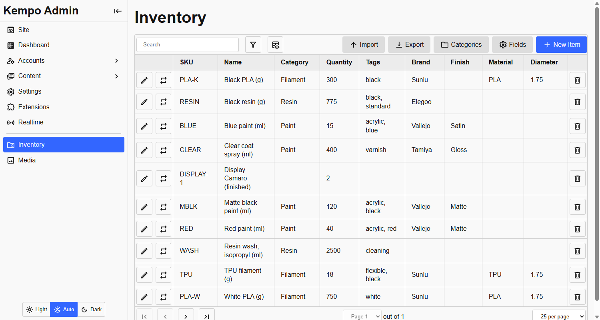

<page pageName="Kempo Inventory" title="Kempo Inventory">
  <content>
    <div class="ta-center mb">
      <p>
        <a href="https://github.com/dustinpoissant/kempo-inventory" class="btn primary mr" target="_blank">GitHub</a>
        <a href="https://www.npmjs.com/package/kempo-inventory" class="btn" target="_blank">npm</a>
      </p>
      <p class="large">The core of an inventory system for <a href="https://github.com/dustinpoissant/kempo" target="_blank">kempo</a>. Track what you have, where it went, and what it is made of.</p>
    </div>

    <p>It is deliberately small. Every item has just a <strong>SKU</strong>, a <strong>name</strong>, a <strong>quantity</strong> and a <strong>description</strong>. Everything else is a custom field that a person adds in the admin, or that another extension registers, so the same base can model parts, books, rentals, supplies, paint, filament, or anything else you keep on a shelf.</p>

    <div class="mb">
      
      <small class="d-b tc-muted">The Inventory page in the admin. The columns after Tags are custom fields, and they come from the field list, so they change when you add one.</small>
    </div>

    <h2 id="what-it-does" class="mt">What it does</h2>
    <ul>
      <li><strong>One audited way to change stock.</strong> Every change has a reason and a note and goes into a movement history, so you can always see how a quantity got to where it is. Stock can never go below zero.</li>
      <li><strong>Custom fields you set up in the admin.</strong> Text, numbers, dates, colours, ratings, choice lists, links to other items, and photos. A field can belong to every item or to one category only.</li>
      <li><strong>Categories and tags.</strong> Group items, give a category a picture and description, and label items so they are easy to find.</li>
      <li><strong>Import and export.</strong> Move the whole inventory in or out as a file, with a check before anything is changed.</li>
      <li><strong>Barcode scanning.</strong> Scan a barcode with a phone camera, or a USB or Bluetooth scanner, to fill in a SKU.</li>
      <li><strong>Built to be built on.</strong> A server SDK and hooks let other extensions add to it, and fields, categories and items can be owned by an extension.</li>
    </ul>

    <h2 class="mt">Where to start</h2>
    <div class="d-g mb" style="grid-template-columns: repeat(auto-fill, minmax(16rem, 1fr)); grid-auto-rows: auto auto; gap: var(--spacer);">
      <a href="./items.html" class="card no-link" style="display: grid; grid-template-rows: subgrid; grid-row: span 2;">
        <h3 class="tc-primary mt0">Items and stock</h3>
        <p class="tc-muted">Adding items, changing stock, tags and barcodes.</p>
      </a>
      <a href="./fields.html" class="card no-link" style="display: grid; grid-template-rows: subgrid; grid-row: span 2;">
        <h3 class="tc-primary mt0">Fields and categories</h3>
        <p class="tc-muted">Describe your items with fields, and group them in categories.</p>
      </a>
      <a href="./import-export.html" class="card no-link" style="display: grid; grid-template-rows: subgrid; grid-row: span 2;">
        <h3 class="tc-primary mt0">Import and export</h3>
        <p class="tc-muted">Move the whole inventory in or out as a file.</p>
      </a>
      <a href="./access.html" class="card no-link" style="display: grid; grid-template-rows: subgrid; grid-row: span 2;">
        <h3 class="tc-primary mt0">Photos and access</h3>
        <p class="tc-muted">Photos and files, who can read the inventory, and who sees stock counts.</p>
      </a>
      <a href="./sites.html" class="card no-link" style="display: grid; grid-template-rows: subgrid; grid-row: span 2;">
        <h3 class="tc-primary mt0">On your own site</h3>
        <p class="tc-muted">Reuse the forms, dialogs and scanner in your own pages.</p>
      </a>
      <a href="./extending.html" class="card no-link" style="display: grid; grid-template-rows: subgrid; grid-row: span 2;">
        <h3 class="tc-primary mt0">Building on it</h3>
        <p class="tc-muted">The server SDK, hooks, ownership, and changing several items at once.</p>
      </a>
    </div>

    <h2 id="quick-start" class="mt">Quick start</h2>
    <h3>1. Install the package</h3>
    <p>In your kempo site:</p>
    <pre><code class="language-bash">npm install kempo-inventory</code></pre>
    <h3 class="mt">2. Install the extension</h3>
    <p>Open <strong>Admin &gt; Extensions</strong> and install <strong>kempo-inventory</strong>. An <strong>Inventory</strong> entry appears in the admin menu.</p>
    <h3 class="mt">3. Add some fields</h3>
    <p>Under <strong>Inventory &gt; Fields</strong>, add what you want to record about your items: a brand, a supplier, a colour. <a href="./fields.html">Fields and categories</a> explains the kinds and how a field can belong to just one category.</p>
    <h3 class="mt">4. Add items</h3>
    <p>Choose <strong>New Item</strong>, give it a SKU and a name, and set its starting quantity. From then on, change its stock with the adjust button on its row, never by editing the number, so the history stays honest.</p>

    <h2 id="works-with" class="mt">Works with</h2>
    <div class="table-wrapper mb">
      <table>
        <thead><tr><th>Extension</th><th>How</th></tr></thead>
        <tbody>
          <tr><td><a href="https://github.com/dustinpoissant/kempo-media" target="_blank">kempo-media</a></td><td>Optional. A media library, so items and categories can have photos.</td></tr>
          <tr><td><a href="https://github.com/dustinpoissant/kempo-files" target="_blank">kempo-files</a></td><td>Optional. A private file library, as an alternative home for photos and files.</td></tr>
          <tr><td><a href="https://github.com/dustinpoissant/kempo-thumbs" target="_blank">kempo-thumbs</a></td><td>Optional. Makes thumbnails for kempo-files.</td></tr>
          <tr><td><a href="https://github.com/dustinpoissant/kempo-products" target="_blank">kempo-products</a></td><td>A product catalog. It never touches inventory directly: see the connector below.</td></tr>
          <tr><td><a href="https://github.com/dustinpoissant/kempo-products-inventory" target="_blank">kempo-products-inventory</a></td><td>Connects the two: selling a product takes the materials it is made from out of inventory.</td></tr>
        </tbody>
      </table>
    </div>
  </content>
</page>
